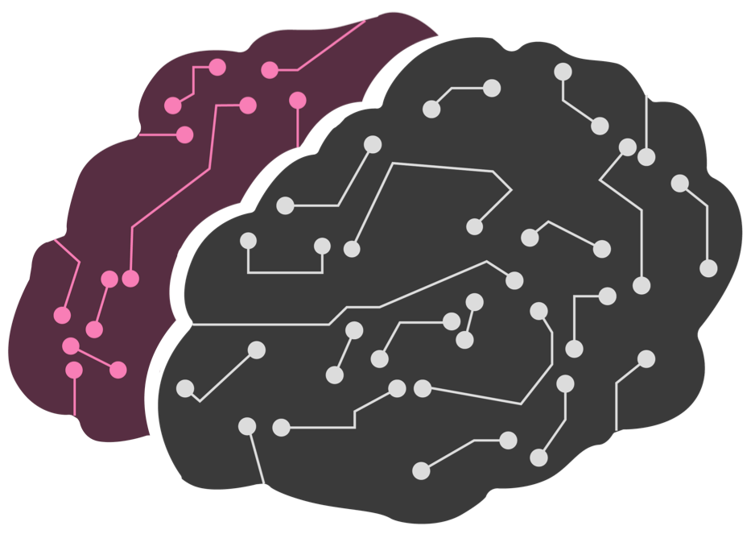

Machine learning
Et si l'on pouvait prédire à l'avance une belle histoire ?
Interface graphique de prédiction. Ouvrir en plein écran
Un flou a été appliqué pour respecter l'anonymat des femmes.
Traditionnellement, l'utilisateur d'un site de rencontre renseigne ses préférences afin d'afficher les profils qui y corespondent.
Ces profils filtrés peuvent être très nombreux, d'autant plus qu'il en arrive de nouveaux en continu, tous les jours.
Leur consultation est est une activité chronophage qu'il est en outre difficile de rendre exhaustive.
On se propose donc d'automatiser la recherche au sein d'une interface interactive.
Celle-ci peut parcourir quotidiennement les n nouvelles femmes inscrites, et affiche uniquement celles dont la probabilité de plaire à l'utilisateur est grande*.
L'exemple ci-dessus présente 8 profils parsés et classés par probabilité décroissante d'intérêt de l'utilisateur. Ce dernier sait alors dans quel ordre consulter les profils. Libre à lui d'utiliser des crédits pour entrer en contact avec les demoiselles.
*"grande" est un seuil arbitraire laissé au choix de l'utilisateur du programme.
Comment générer votre interface de prédiction
Ingrédients
Pour générer votre propre interface de prédiction il vous faut :- Une connexion internet avec Firefox ;
- Un compte AdopteUnMec, éventuellement factice ;
- L'application Jupyter ;
- De la patience pour labeliser à la main les profils de l'échantillon d'entraînement avec des 0 ou des 1 ;)
Étape 1 : la labelisation des données
Commencez par télécharger le projet depuis le github dédié (~350Mo) : https://github.com/PierreDesmet/Analyse-AdopteUnMec.Le dossier Profils contient les profils scrappés de femmes au format html. Il suffit de les répartir dans les sous-dossiers Positives samples (pour ceux qui vous plaisent) et dans le dossier Negatives samples (pour les autres). Vous pouvez bien sûr ajouter de nouveaux profils html en les enregistrant directement depuis le site. Ou en supprimer si vous ne vous sentez pas de labeliser la totalité des profils.
Ouvrir l'excel Infos_perso.xlsx. Y renseigner vos séries préférées (tout en haut), ainsi que les coordonnées GPS de votre ville (https://www.coordonnees-gps.fr). Cela permet d'avoir des recommandations personnalisées de femmes ayant des séries en commun et qui résident à proximité de votre lieu d'habitation.
Vue du fichier Infos_perso.xlsx
Étape 2 : la formation d'une base Excel
Ouvrir avec Jupyter le notebook 1 - Collecte des données.ipynb et l'exécuter (bouton "Run all"). Pour 300 profils par exemple, le temps d'exécution est inférieur à une minute. À l'issue de cette étape est créé un classeur Excel "data_Femmes.xls" dans le dossier Données. Il contient les caractéristiques des femmes, en plus de nouvelles variables (voir Collecte des données). Les profils que vous avez validés sont annotés d'un label "1", les autres d'un "0".Aperçu pour les 3ères lignes de l'Excel exemple.
Étape 3 : l'entraînement de votre propre modèle de prédiction
Le modèle va apprendre de lui-même les règles de sélection qui sont les vôtres. Par exemple, le tryptique tatouage + cigarette + piercing vous est peut-être rédhibitoire... Ouvrir le notebook 3 - Machine Learning.ipynb et l'exécuter intégralement.Les actions qu'il réalise sont les suivantes :
- Traitement des données manquantes
- Split en échantillons Train et Valid
- Label encoding et normalisation des données
- Entraînement d'un modèle de gradient boosting (XGBoost)
- Calibrage des méta-paramètres du modèle par Random Search
- Métriques de performance et feature importance
|  Train in progress... |
| À l'issue de cette phase est créé un modèle Modèle_1.pkl dans le dossier Pickles. On peut voir ce fichier comme un livre répertoriant tout ce que vous recherchez chez une femme. Le graphique "Feature importance" (à la fin du notebook) donne pour chaque variable sa relative importance pour prédire le label. Les variables dont les barres sont les plus hautes correspondent à des critères que vous recherchez (ou évitez !) absolument ; celles avec une petite barre sont les variables pour lesquelles vous accordez moins d'importance. L'occasion d'en apprendre plus sur vous-même 😊 |

|